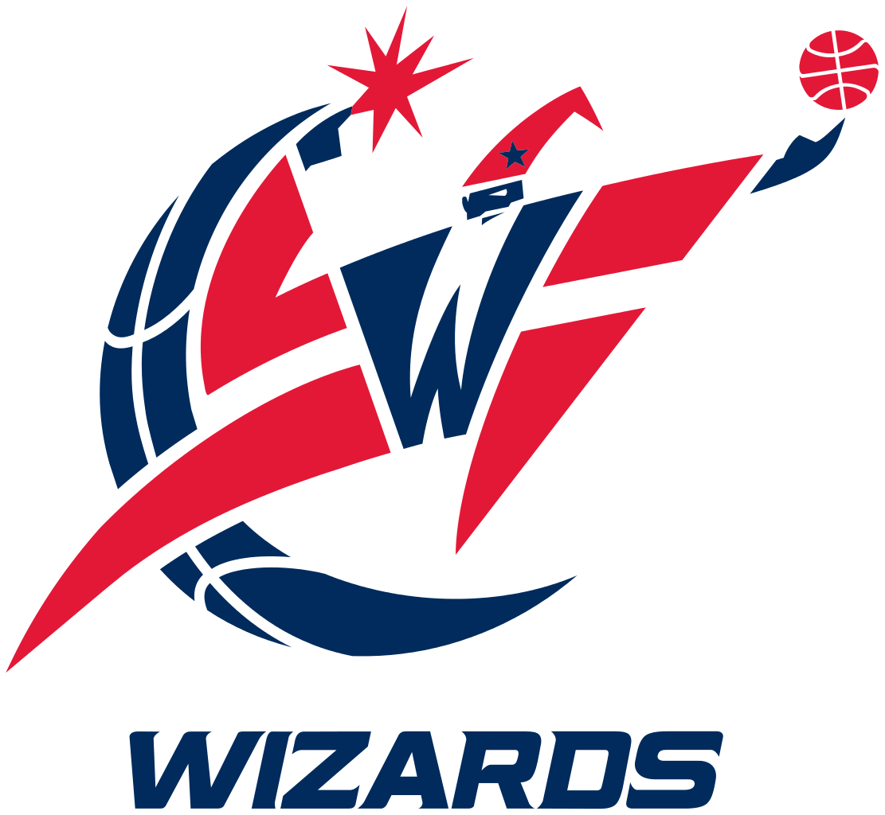
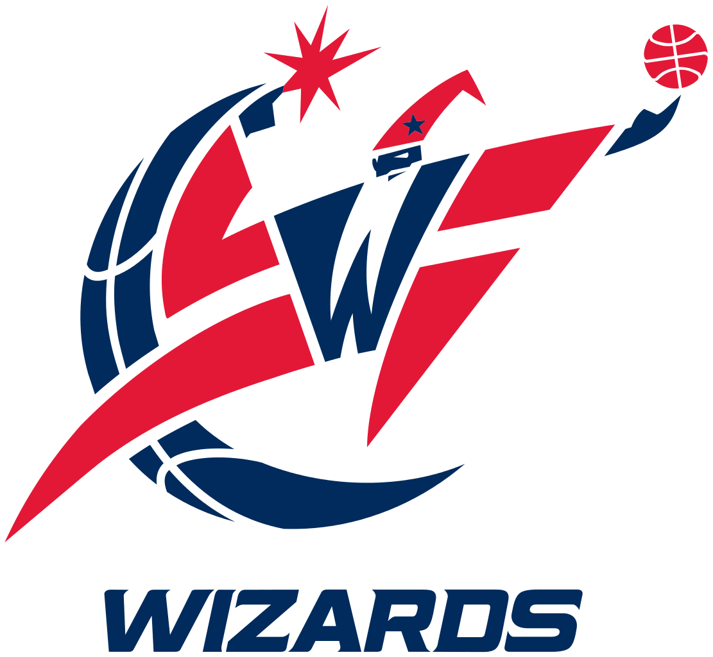

Washington D.C. Sports
 


Summary
Although Washington, D.C. sports have a storied history, teams have struggled mightily in the 2000's to garner any professional success. There have been zero championships won by major D.C. sports teams since 2000, with particular headaches arising from the Washington Redskins and Wizards. Despite offering blockbuster contracts to a number of players (Albert Haynesworth, Gilbert Arenas), these two particular teams have continuously embarassed the city of D.C.
Notable Players
Championships
| Washington Redskins | 1992 |
| Washington Redskins | 1988 |
| Washington Redskins | 1983 |
| Washington Wizards | 1978 |